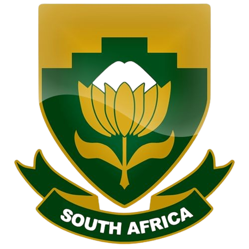
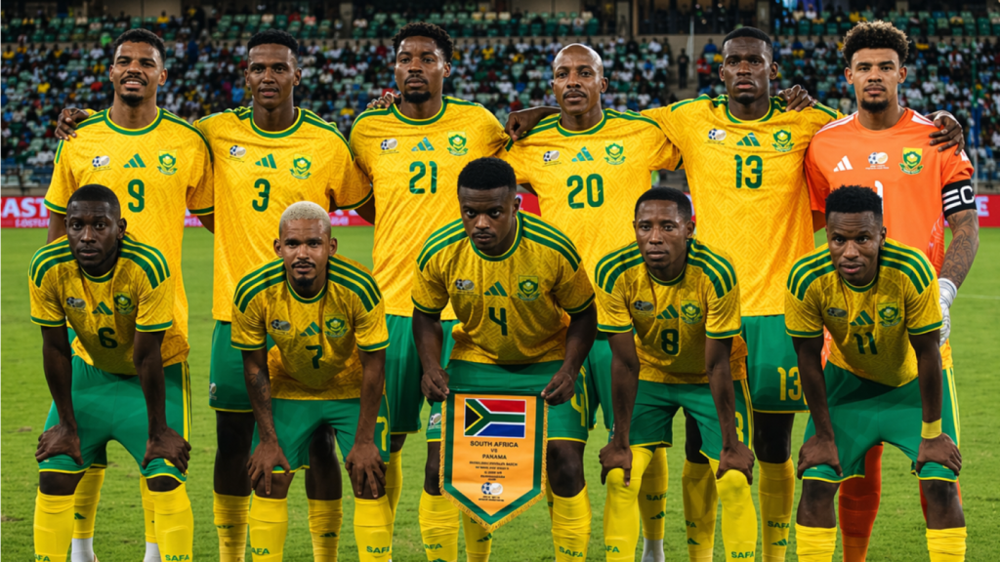
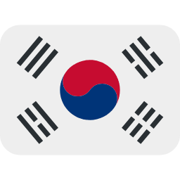

África do Sul
África do Sul
3
Participações
(1998-2010)

África
A seleção sul-africana de futebol, conhecida como "Bafana Bafana" (os rapazes, em zulu), representa a África do Sul nas competições internacionais. O país ficou marcado na história do futebol ao sediar a Copa do Mundo de 2010, tornando-se o primeiro país africano a receber o maior torneio de futebol do planeta. Apesar do histórico modesto nas Copas, a África do Sul tem grande paixão pelo futebol e uma base de torcedores fervorosa.

Goleiros:
Defensores:
Meio-campistas:
Atacantes:
Participações
(1998-2010)
Títulos
Melhor campanha
Primeira
participação
| Ano | Sede | Resultado |
|---|---|---|
| 1998 | Fase de Grupos | |
| 2002 |  Japão/Coreia do Sul | Fase de Grupos |
| 2010 | Fase de Grupos |
| Participações | 3 |
| Títulos | 0 |
| Vice-campeonatos | 0 |
| 3º Lugar | 0 |
| 4º Lugar | 0 |
| Melhor campanha | Fase de Grupos |
| Jogos disputados | 9 |
| Vitórias | 2 |
| empates | 2 |
| Derrotas | 5 |
calendar_monthJunho - Julho de 2026
location_onMéxico, Estados Unidos e Canadá